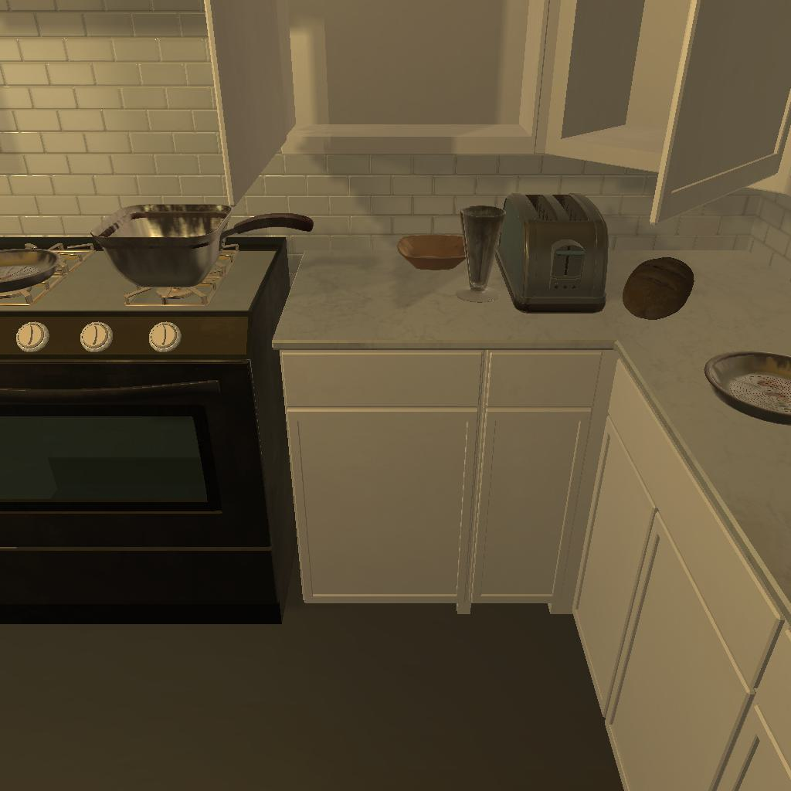

---------------------------------------------------------task: 10---------------------------------------------------------
--------------------------------------------------------------------------------------------------------------------------------------------------------------------
--------------------------------------------------------------------------------------------------------------------------------------------------------------------
Step:--------------------------------------------------------------------------19-------------------------------------------------------------------------------
----------------------------------------
VLM Prompt:
Image1:
Image2:
**Instruction**
1. Analyze the provided images to identify all visible household objects and compare the difference between images (e.h. whether the object is opened or not and taken on hand or not), focusing on those relevant to the task description "put a clean plate in countertop."
2. Use the analysis of images and the task hint "The agent must find an object of the desired type, pick it up, go to a sink or a basin, clean the object with a sink or basin, and then find the correct location to place it and put it down there. The agent does not need to use soap bottle or faucet to clean the object, and the agent just needs to do action that is "clean the object with the sink or sink basin"." to answer the question: what is the most reasonable action in the choices for the task description "put a clean plate in countertop"?
3. Decide and write the answer using the template: The answer is: (i): , where i is the real number. If there is no desired object in images, search every place based on **Initial Observation** to find the object. And if no one is exactly correct, choose a similar answer.
**Initial Observation**
You are in the middle of a room. Looking quickly around you, you can see cabinet (1-20), toaster (1), microwave (1), garbagecan (1), countertop (1-2), drawer (1-4), stoveburner (1-4), sinkbasin (1), sink (1), fridge (1), diningtable (1), coffeemachine (1)
**Answer Choices**
(1): go to cabinet 3
(2): go to toaster 1
(3): go to cabinet 4
(4): go to cabinet 5
(5): go to microwave 1
(6): go to garbagecan 1
(7): go to countertop 1
(8): go to drawer 1
(9): go to cabinet 6
(10): go to cabinet 7
(11): go to drawer 2
(12): go to stoveburner 1
(13): go to stoveburner 2
(14): go to countertop 2
(15): go to cabinet 8
(16): go to cabinet 9
(17): go to cabinet 10
(18): go to drawer 3
(19): go to drawer 4
(20): go to stoveburner 3
(21): go to stoveburner 4
(22): go to cabinet 11
(23): go to cabinet 12
(24): go to cabinet 13
(25): go to cabinet 14
(26): go to sinkbasin 1
(27): go to sink 1
(28): go to cabinet 15
(29): go to fridge 1
(30): go to cabinet 16
(31): go to cabinet 17
(32): go to cabinet 18
(33): go to cabinet 19
(34): go to diningtable 1
(35): go to coffeemachine 1
(36): go to cabinet 20
(37): open cabinet 2
(38): close cabinet 2
(39): take pot 1 from cabinet 2
(40): take pan 1 from cabinet 2
(41): take bread 1 from cabinet 2
(42): take cup 1 from cabinet 2
(43): take pan 2 from cabinet 2
(44): take bowl 1 from cabinet 2
(45): take stoveknob 1 from cabinet 2
(46): take stoveknob 2 from cabinet 2
(47): take stoveknob 3 from cabinet 2
(48): examine cabinet 2
**Answer**
Let's think step by step by following the instructions.
----------------------------------------
----------------------------------------
Original Response:
First, we need to analyze the images provided to identify all visible household objects. In Image 1, we can see a portion of a countertop and a cabinet, but no specific objects are visible. In Image 2, we can see a stovetop with a pot on one of the burners, a countertop with a toaster, a glass, a wooden spoon, and what appears to be a coconut. There are also cabinets visible but no plates are in sight.
According to the task description "put a clean plate in countertop" and the hint provided, the agent must first find a plate, clean it at a sink or basin, and then place it on the countertop.
Based on the Initial Observation, plates are most likely to be found in cabinets or drawers. Since no plates are visible in the images, the agent would need to search these locations.
From the answer choices given, the actions related to finding and handling a plate are:
(1): go to cabinet 3
(3): go to cabinet 4
(9): go to cabinet 6
(10): go to cabinet 7
(15): go to cabinet 8
(16): go to cabinet 9
(17): go to cabinet 10
(22): go to cabinet 11
(23): go to cabinet 12
(24): go to cabinet 13
(25): go to cabinet 14
(28): go to cabinet 15
(30): go to cabinet 16
(31): go to cabinet 17
(32): go to cabinet 18
(33): go to cabinet 19
(36): go to cabinet 20
(37): open cabinet 2
(48): examine cabinet 2
We can eliminate actions related to other objects like the toaster, stove burner, sink, etc. Since we need to find a plate, the most relevant actions are going to a cabinet or opening a cabinet to find a plate.
The answer is: (37): open cabinet 2, as it is the only action that involves interacting with a cabinet in a way that could lead to finding a plate. If a clean plate is found, it can then be placed on the countertop as per the task description.
----------------------------------------
----------------------------------------
>>> Refine Original VLM Response and Get Pure Action: open cabinet 2, as it is the only action that involves interacting with a cabinet in a way that could lead to finding a plate
----------------------------------------
-----------------------------------------------------------------
Running time: 15.236120700836182 seconds
Total Money: 4.671740000000003
-----------------------------------------------------------------
-----------------------------------------------------------------
Text Observation:Nothing happens.
-----------------------------------------------------------------
UNSUCCEED